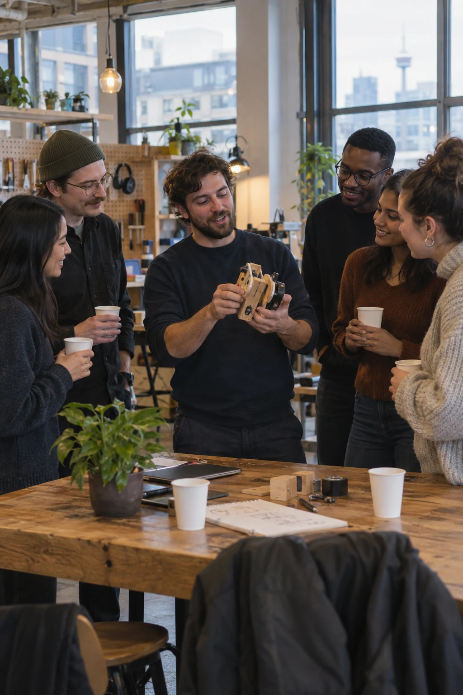

Pillar 01 · Founders Lab
Your next chapter starts here.
Join Vancouver’s AI founder community. Build with peers and mentors, with a pathway to selective acceleration.
Three stages, one founder journey.
- 01
Connect & build
Community, mentors and events. Open to any founder.
- 02
Earn acceleration
Validate, launch and get investor-ready. Selective.
- 03
Unlock growth
Scale-up support and investor connections.
Open membership connects you with the ecosystem. Acceleration is selective. Growth support requires demonstrated traction. AIC facilitates investor introductions and does not guarantee funding.

Meet the people who can move your idea forward.
Build alongside ambitious founders
First-time and repeat founders, engineers, and product builders working on real AI products, meeting at workshops, build sessions, and Innovation Nights.
Learn from experienced operators
Mentors and entrepreneurs-in-residence who have built, scaled, and exited, available to members through the community and to selected startups through acceleration.
Make the right investor connections
Investors meet AIC startups through curated introductions and community events, when companies are ready, not before.
Expand your circle of opportunity
Founders Lab connects into the whole AIC ecosystem, the AI Adoption and Applied Research pillars, employer partners, and Vancouver's applied AI community.
Take your first step with Founders Lab.
Start with an Innovation Night, or reach out directly, tell us what you’re building.
Innovation Night · September 22
Building in Canada. From Idea to Scale.
Meet founders, investors and builders at Innovation Night. Discover the Founders Lab community and its selective Accelerator pathway.